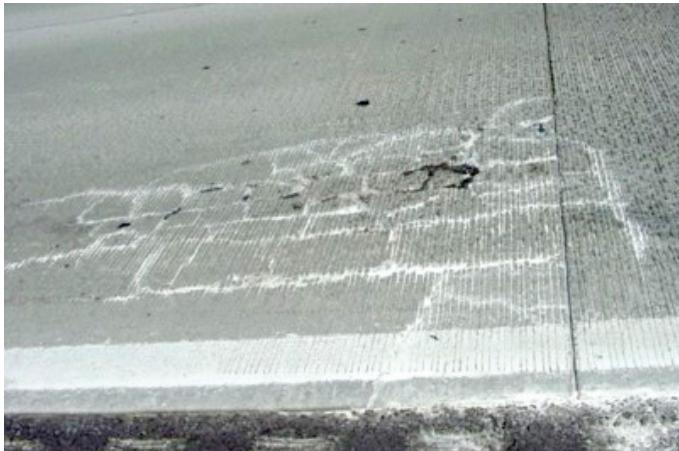
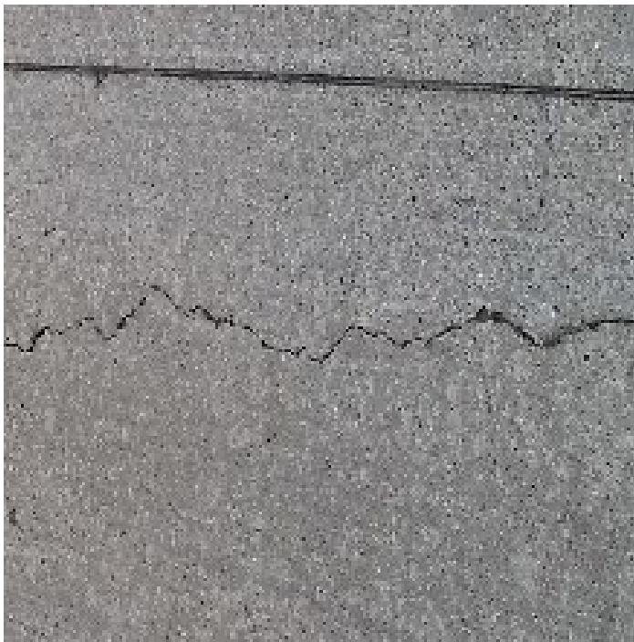
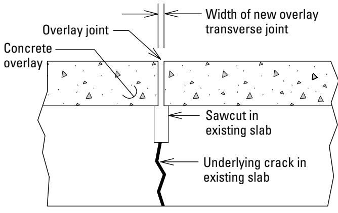
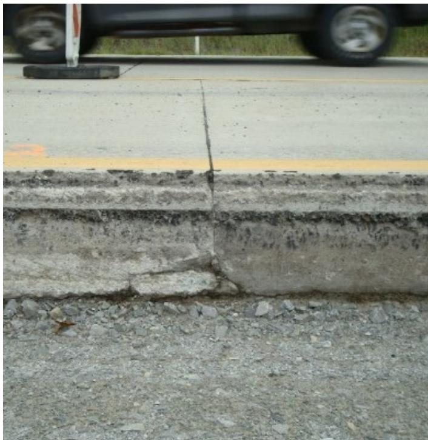
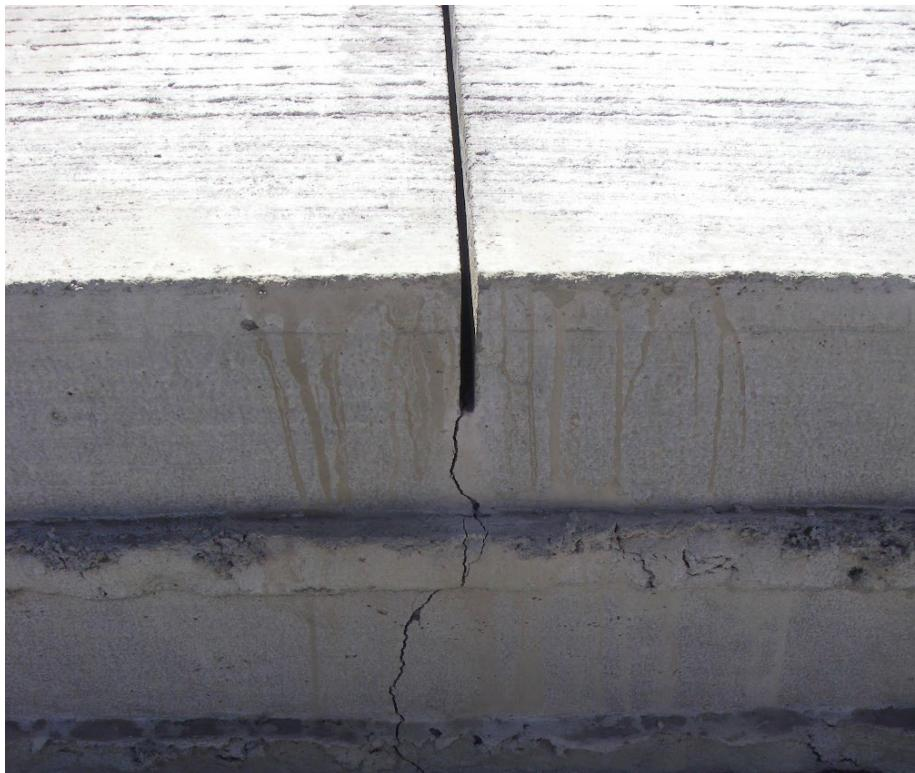
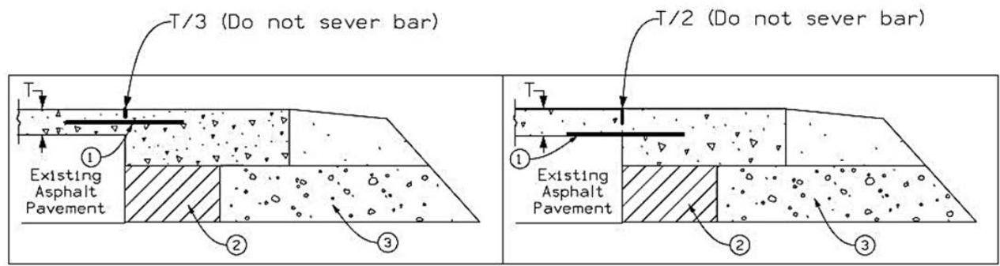
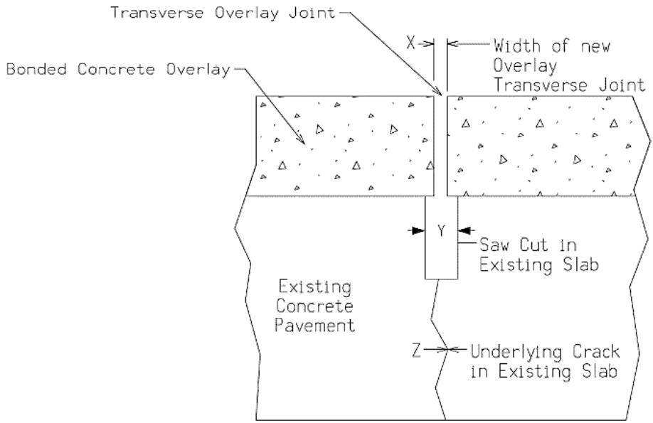
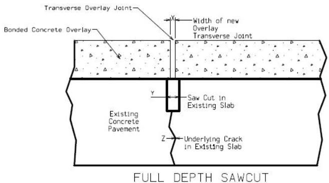

BCOC Joint Preparation and Bonding
BCOC Joint Preparation and Bonding is a construction procedure that creates a reliable structural connection between a new thin concrete‑on‑concrete overlay and an existing pavement by eliminating the debonding failures, reflective cracking, and faulting that occur when joint readiness is inadequate[10][11][14][16][17][19]. The method requires the existing slab to be in at least fair‑to‑good condition, cleaned and roughened to a saturated‑surface‑dry (SSD) state, and its joint pattern duplicated with transverse saw cuts that extend through the full pavement depth plus an additional ½ in., whose width matches or exceeds the widest underlying crack (plus a minimum clearance), while all joints are sealed and no dowel bars are installed; tie bars are permitted only when overlay thickness reaches five inches[11][14][16]. Bond‑material use is generally discouraged, placement must occur under controlled temperature and humidity to protect bond development, and immediate post‑placement curing—typically a double coat of white‑pigmented wax or resin—extends onto vertical faces to control moisture loss, together ensuring the overlay behaves as a monolithic unit[11][16][19].
Sources (19)
Purpose and applicability
The BCOC Joint Preparation and Bonding procedure solves the problem of inadequate joint readiness that would otherwise prevent a reliable structural connection between the new overlay and the existing pavement. BCOC Joint Preparation and Bonding is designed to eliminate the debonding failures that occur when an overlay does not achieve a reliable structural connection with the existing concrete pavement. The BCOC joint preparation and bonding method solves the fundamental problem of premature loss of the interface bond between a thin concrete‑on‑concrete overlay and the existing pavement, which would otherwise lead to debonding, reflective cracking, and uncontrolled random cracking. The BCOC joint preparation and bonding procedure solves the fundamental problem of inadequate structural continuity between an existing concrete slab and its bituminous overlay—specifically, insufficient load transfer, debonding, faulting, and related distress that arise when overlay joints are too narrow, mis‑aligned, or unsupported. [10][11][14][16][17][19]
The following figure illustrates cracking resulting from joint lockup.

Cracking from joint lockup in a bonded concrete overlay on concrete (BCOC) [16]The image displays a section of a paved surface where the existing pavement joints have been duplicated by saw cuts in the new overlay. A network of random cracks is visible between these transverse lines, indicating that debonding has occurred when the overlay pushed against itself due to joint lockup. This failure mode illustrates why it is critical that the overlay joints match the existing pavement joints so that the overlay can move in unison with the underlying concrete pavement.
[10] — Preparing Joints (p. 49); [11] — Ch. 18 (pp. 390–401); [14] — App. A (p. 108), App. C (pp. 130–132); [16] — 5. Condition assessment profile (pp. 19–44); [17] — Equipment for Sawing (pp. 42–43); [19] — 2. Overview of Thin Concrete O… (pp. 20–30)
BCOC joint preparation and bonding is appropriate when a series of documented conditions are satisfied. The guides require that “It is critical that the surface of the existing concrete base be saturated, surface‑dry (SSD) or drier—no free water—at the time of overlay placement” and that the pavement be in “fair to good condition concrete pavement”. The jointing pattern must be consistent with the existing slab, as stated: “The jointing pattern for a COC–B overlay must match the jointing pattern of the existing pavement.” Transverse joints are required to cut through the full depth plus a half‑inch; both “Typical design requirements call for cutting the joints to a depth equal to the maximum overlay thickness plus 1/2 inch” and “The depth of the transverse sawcut joints should be the full depth of the pavement system plus ½ in.” must be met. Joint widths must accommodate underlying cracks: “BCOC joints must be cut directly above all existing joints and with a saw cut width at least as wide as the widest part of the crack beneath the joint in the underlying pavement” and “Overlay joint width shall be equal to or greater than crack width of the existing slab.”
Crack size and load‑transfer provisions are also addressed. When a crack is 0.25 in. (6.4 mm) or larger and no dowel bars exist, the guides direct that “the joints should be evaluated to determine if load transfer rehabilitation is required to eliminate faulting” (both “If crack is 0.25 in. (6.4 mm) or greater, and existing pavement does not have dowel bars, the joints should be evaluated to determine if load transfer rehabilitation is required to eliminate faulting.” and “If crack “Z” is 0.25 in. or greater, and existing pavement does not have dowel bars, the joints should be evaluated to determine if load‑transfer rehabilitation is required to eliminate faulting.”). For cracks 0.50 in. or wider, measurement is mandated: “If “Y” is 0.50 in. or greater, the underlying crack width in the existing slab should be measured.”
When the overlay thickness meets or exceeds five inches, tie‑bar reinforcement may be used: “Epoxy coated No. 4 tie bar 36"" long at 0 spacing” and “Tie bar placement with overlay thickness ≥5"” are specified. The use of dowel load‑transfer devices within a bonded overlay is prohibited: “dowel load transfer devices should never be installed in the bonded concrete overlay as they may induce additional stresses at the bond interface, resulting in debonding.” Additionally, bond‑material applications are discouraged unless specifically required: “Bond Material: The use of bond material (e.g., epoxy mortar or cement grout) is generally discouraged (unless specifically required for use with a proprietary repair material).”
Conversely, an alternative method should be selected when any of these prerequisites cannot be met. If the surface cannot be kept SSD, if many joints exhibit the problematic characteristics—“If there are numerous joints of this type, the existing pavement may not be a good candidate for BCOC”, “If there are numerous joints of this type, the existing pavement may not be a good candidate for a bonded overlay.”, or “If there are numerous joints with this condition, the existing pavement may not be a good candidate for a bonded overlay”—or if cracks exceed 0.25 in. without viable load‑transfer rehabilitation, the pavement is deemed unsuitable for a bonded overlay. The risk of debonding under adverse conditions is highlighted by “debonding (with cracking) may happen when the overlay pushes against itself.” In such cases an unbonded overlay, mechanically keyed system, or full reconstruction is recommended. [11][14][16]
The following figure illustrates the consequences of failing to properly prepare joints by showing a reflective crack that developed because a transverse joint was not cut over an underlying concrete pavement crack.

Reflective crack in a concrete overlay caused by failure to cut a transverse joint over an existing underlying pavement crack. [11]The image displays a close-up of a gray concrete surface featuring a jagged, dark linear fracture running horizontally across the middle of the frame. The distress demonstrates a failure mode where “the overlay joint saw cut does not line up with the joint in the existing pavement, resulting in the formation of a parallel reflective crack in the overlay directly over the joint in the underlying pavement.”
[11] — Ch. 18 (pp. 390–392); [14] — App. C (p. 130); [16] — 5. Condition assessment profile (pp. 19–44)
Required inputs
The guides require that a BCOC overlay be placed on a concrete slab that is in at least “fair‑to‑good condition” so it can act as a monolithic unit. Overlay joints must match the existing pavement joints; the width of the new transverse joint in the overlay should be equal to or greater than the crack in the existing pavement, and all existing joints should be filled/sealed to prevent intrusion of mortar during overlay placement.
Prior to placing the overlay, the existing concrete surface must be cleaned to a dry, roughened condition. “Creation of a roughened surface enhances bonding between the two layers. Procedures include shot blasting, milling, high‑pressure water blasting, and sand blasting.” The surface is then air‑blasted immediately before paving: “Air blasting will further clean the surface and remove excess water just prior to paving.” Any dust, microfractured concrete, road oils, or other contaminants must be removed: “Failure to adequately remove dust, microfractured concrete, road oils, and other potential contaminants and debonding agents from the existing pavement surface prior to paving.”
The substrate must be “saturated, surface‑dry (SSD) or drier—no free water—at the time of overlay placement.” Use of bond materials such as epoxy mortar or cement grout is generally discouraged: “Bond Material: The use of bond material (e.g., epoxy mortar or cement grout) is generally discouraged (unless specifically required for use with a proprietary repair material) because bond materials may form or create a weak interface between the overlay and original pavement.” If a bond material is required, it must remain unset until placement: “When bond materials are required, they must also be applied properly and in a timely manner and must not be allowed to harden, dry, set, “skin over,” or otherwise cure prior to placement of the overlay.”
Placement should occur under climate conditions that avoid rapid temperature swings, high humidity changes, and wind, because “Climate conditions known to affect the development of bond strength at placement and shortly thereafter include rapid changes in air and concrete temperature (especially rapid cooling, e.g., after rain events on hot days), … relative humidity and wind speed.” Early curing is protected, commonly with a double‑coat of white‑pigmented wax or resin spray, water fogging, or plastic sheeting: “One common approach in warm weather is to use a double-coat of white‑pigmented, wax- or resin-based spray-on curing compound, although water-fogging and plastic sheeting may also be effective.”
No specific mixture properties are prescribed; the emphasis is on substrate condition, joint geometry, surface preparation, and controlled environmental conditions. [11][16]
[11] — Ch. 18 (pp. 390–392); [16] — 5. Condition assessment profile (pp. 19–44)
The overlay may be installed only on a concrete pavement judged to be in fair‑to‑good condition, and all overlay joints must line up with the existing slab joints so that the two layers expand and contract together. Panel dimensions for thin overlays (≤6 in) are typically 6 ft × 6 ft or smaller with a maximum aspect ratio of 1:1.5; joint length shall not exceed 1.5 times the overlay thickness in inches for thin overlays and 2.0 times for thicker layers, and no joint may be spaced more than 15 ft apart.
Joint preparation requires that BCOC joints must be cut directly above all existing joints and with a saw cut width at least as wide as the widest part of the crack beneath the joint in the underlying pavement. The required joint width is equal to or greater than crack width of the existing slab, and the final opening is set to the measured crack width plus an additional 0.125 in.
Transverse cuts are commonly specified as the full depth of the pavement system plus ½ in (or full depth plus 0.5 in) to intersect the bond line, but early‑entry or wet‑cut methods may limit depth to T/4 to T/3 deep or cut to a depth of about one‑third of the slab thickness. Supplemental joints on long panels are limited to one‑third the overlay thickness, and where a second rim is needed the guides state to make a second rim by cutting through the overlay first another 12 to 24 in. The ultimate cut through the underlying pavement should extend 2 in. into the subgrade.
Longitudinal joints are required to be at least half the overlay thickness: longitudinal joints cut over tied joints in the original pavement should be cut to a depth of at least half of the overlay thickness and the sawcut depth of a longitudinal joint in an overlay 4 in. thick or less should be T/2. Where full‑depth cutting is used, the depth may be cutting the joints to a depth equal to the maximum overlay thickness plus 1/2 inch.
Surface preparation mandates that it is critical that the surface of the existing concrete base be saturated, surface‑dry (SSD) or drier—no free water—at the time of overlay placement, and all dust, oil, and loose material must be removed by shot blasting, milling, high‑pressure water, or sand‑blasting. Immediate paving after cleaning prevents drying of any bonding agent.
Pre‑construction verification includes: confirming SSD condition; measuring crack widths and saw‑cut dimensions against the prescribed tolerances; recording any existing crack ≥0.50 in and assessing load‑transfer rehabilitation for cracks ≥0.25 in in slabs without dowel bars; inspecting for prohibited dowel devices (dowel load transfer devices should never be installed in the bonded concrete overlay…) and ensuring no tie bar is severed by a cut (Saw cuts may not exceed one‑third of the slab depth and must not sever any tie bar).
Embedded steel policy: Dowels are never placed in COC–B overlays because (1) COC–B overlays are usually less than 6 in thick, and tiebars, dowel bars, or other embedded steel products are not normally used in thin (≤5 in.) bonded concrete overlays to minimize restraint forces in the bond. Tie bars are required only when overlay thickness is ≥5 in (when epoxy‑coated No. 4 tie bars 36 in long … drilled and epoxied into the existing concrete to “full depth plus ½ in.”) or when a drainable subbase exists; otherwise no tie bars are used.
Adequate equipment must be on site: conventional wet‑cut (water‑injection) saws and enough units to keep pace with placement, as experience has shown that an adequate number of saws must be available on‑site for the joint sawing to keep pace with the construction operation. [10][11][14][16][17][19]
[10] — Cutting the Pavement (p. 48); [11] — Ch. 18 (pp. 390–392); [14] — App. A (p. 108), App. C (pp. 130–132); [16] — 5. Condition assessment profile (pp. 19–44); [17] — Equipment for Sawing (pp. 42–43); [19] — 2. Overview of Thin Concrete O… (pp. 20–30)
Work sequence
Before any BCOC joint preparation or bonding can begin, the following conditions must be satisfied: - “all pre‑overlay repairs must be finished and the existing concrete base must be properly prepared.” - “The surface should be roughened—by shot blasting, milling, high‑pressure water blasting or sand blasting—and cleaned of dust, oil, and other contaminants.” - “For a bonded concrete overlay on concrete (BCOC) to be successful, it must be placed on a fair to good condition concrete pavement to establish a good bond and behave like a monolithic structure.” - “all required tie bars must already be installed in the existing pavement; if original tie bars are missing or have failed they must be retrofitted using cross‑stitching or slot‑stitching techniques before overlay placement.” - “No dowel bars are used in these overlays because thin cover and shear loads would jeopardize the bond.” - “the overlay must have cured enough that full‑depth transverse cuts can be made without causing raveling or chipping of the surface.” - “the overlay joints must be designed to exactly match the type, location, and width of the existing concrete pavement.” - “This requires a survey of the existing cracks and spot‑excavation along the pavement edge so that the transverse joint in the overlay can be cut to at least the measured crack width.” - “All existing joints are located, measured, and duplicated in the overlay layout; Overlay joint width shall be equal to or greater than crack width of the existing slab.” - “BCOC joints must be cut directly above all existing joints and with a saw cut width at least as wide as the widest part of the crack beneath the joint in the underlying pavement at the time of overlay placement.” - “The existing joints should be filled/sealed to prevent intrusion of mortar during the overlay placement.” - “Using a concrete saw with a diamond blade, the contractor will make straight sawcuts in the overlay along the marked lines (through existing joints as necessary).” - “For doweled perimeter joints, cut the pavement to its full depth, and for undoweled perimeter joints, use a chipped face.” - “cut to a depth of about one‑third of the slab thickness and prepare the remainder of the joint face with a jackhammer, being careful not to undercut the perimeter.” - “Depending on the type of overlay, this may involve drilling holes for dowel bars into either the overlay or the underlying concrete pavement.” - “Timely joint sawing is critical to prevent random cracking in COC–B overlays.” - “Experience has shown that an adequate number of saws must be available on‑site for the joint sawing to keep pace with the construction operation.” [10][11][14][16][19]
The following figure illustrates the proper joint preparation and bonding techniques for BCOC overlays.

Schematic of a transverse joint in a bonded concrete overlay aligned with an underlying crack. [14]The figure shows a cross-section of a concrete overlay placed over an existing slab, where the new material is separated by a vertical sawcut.
[10] — Cutting the Pavement (p. 48), Preparing Joints (p. 49); [11] — Ch. 18 (pp. 390–392); [14] — App. A (p. 108), App. C (p. 132); [16] — 5. Condition assessment profile (pp. 19–44); [19] — 2. Overview of Thin Concrete O… (pp. 20–30)
- Locate and mark the existing concrete joints so that the overlay joints are placed directly over them.
- Excavate alongside each slab edge to expose the underlying crack, measure its width, and set the transverse overlay joint width equal to or greater than that measured crack (with a minimum increase of 0.125 in.).
- Evaluate each existing joint by measuring any saw cut of 0.5 in or more and the underlying crack; if the crack is 0.25 in or larger and dowel bars are absent, determine whether load‑transfer rehabilitation is needed and seal the joint to keep mortar out.
- Fill and seal the existing joints before placing the overlay to prevent intrusion of mortar during overlay placement.
- Roughen the existing concrete—typically by milling, shot blasting, high‑pressure water blasting or sand blasting—to develop a key for bond.
- Immediately before paving, air‑blast (or sand‑blast) the surface to remove dust, oil and any remaining debris and to drive off excess moisture.
- Using a concrete saw with a diamond blade, make straight sawcuts in the overlay along the marked lines; cut transverse joints full depth plus an additional half‑inch, ensuring the cut width is at least as wide as the widest part of the underlying crack. For doweled perimeter joints cut to full depth; for undoweled joints cut to about one‑third of the slab thickness and finish the remainder with a jackhammer, being careful not to undercut the perimeter. If the combined thickness of overlay and underlying pavement is too thick for a single pass, make a second rim cut 12 to 24 inches back from the intended edge, then extend the final cut about 2 inches into the subgrade.
- Saw longitudinal joints to a depth of at least one‑half the slab thickness (some agencies require full depth plus 0.5 in).
- Place the BCOC overlay without bond material unless a specific requirement dictates otherwise.
- Immediately apply a double‑coat of white‑pigmented wax or resin spray curing compound (or an equivalent water‑fogging/plastic sheeting system) to all horizontal and vertical surfaces, extending the coating 1–2 in below the interface to control temperature and moisture loss. [10][11][16]
The following figure illustrates a bonded concrete overlay joint placed directly over a full-depth repair joint in the original pavement.

Bonded concrete overlay joint placed directly over full-depth repair joint in original pavement [11]The image displays a vertical cross-section of a paved surface where a new layer of concrete has been placed atop an existing slab. A transverse saw cut extends through the full depth of both the overlay and the underlying pavement, aligning directly over a vertical joint in the original structure. Reflective cracking results when an overlay is placed over existing pavement joints and cracks without constructing an overlay joint directly above the existing pavement joint or crack. Prevention of this failure mode involves sawing overlay joints directly above the existing pavement joints or cracks.
[10] — Cutting the Pavement (p. 48); [11] — Ch. 18 (pp. 390–392); [16] — 5. Condition assessment profile (p. 44)
Immediately after a bond material (e.g., epoxy mortar or cement grout) is placed, the BCOC overlay must be installed before any hardening, drying, setting, skin‑over, or other curing of the bond occurs—there is no allowable waiting period. The chosen curing method for the freshly paved overlay must begin as soon as practicable after paving to control temperature and moisture loss and preserve bond strength. Joint cutting (sawing) must be performed promptly once the concrete has developed enough strength to support the saw blade but before debonding stresses become dominant; the window is defined by cutting “after the overlay has hardened enough to permit clean cuts without raveling, yet before debonding stresses become dominant.” Accordingly, joints should be cut as early as possible to prevent random cracking, and sawing should never be delayed until the next day after placement unless an extreme delay in the concrete’s set time occurs. Sufficient on‑site sawing capacity is required to keep pace with construction and meet these timing constraints. [11][14][17]
The following figure illustrates the critical timing for sawing joints in BCOC overlays.

Vertical crack propagating through a concrete overlay and joint interface. [11]The image displays a vertical section of a concrete pavement featuring a transverse saw cut at the top that transitions into an irregular, jagged crack extending downward through the full depth of the slab.
[11] — Ch. 18 (pp. 391–392); [14] — App. C (p. 132); [17] — Equipment for Sawing (pp. 42–43)
Staging and logistics
The merged guidance identifies both spatial/site‑access limits and weather/environmental factors that govern BCOC joint preparation and bonding.
Space and site‑access constraints are driven by equipment clearance. When the overlay plus existing pavement exceeds the reach of a concrete saw blade, the contractor must “make a second rim by cutting through the overlay first another 12 to 24 in. from the intended perimeter.” Joint faces for chipped joints are limited to “about one-third of the slab thickness” and any remaining material is removed with a jackhammer while “being careful not to undercut the perimeter.” The final cut into the subgrade must extend “about 2 in, ensuring proper bond development.”
Weather and environmental constraints span moisture control, contaminant avoidance, temperature and humidity fluctuations, and cold‑weather considerations. Surfaces must be “surface‑dry (SSD) or drier—no free water,” and cleaning operations must prevent oil introduction: “Introduction of oil or other contaminants to the pavement surface by using air compressors without oil traps during air- or sand-blasting operations.” Standing water after washing is prohibited: “Surface left too wet after water‑blasting or washing (i.e., free water is visible) immediately ahead of paving operation.” Bond development is sensitive to climate; “rapid changes in air and concrete temperature (especially rapid cooling, e.g., after rain events on hot days), the time of concrete placement (i.e., night, morning, afternoon or evening, as well as time of year), and relative humidity and wind speed” can reduce bond strength. The overlay must be placed on a “fair to good condition concrete pavement,” with joints that “match the existing pavement joints” so that “movement includes expansion and contraction with temperature changes.” If joint width is insufficient, “debonding (with cracking) may happen when the overlay pushes against itself,” echoed by the statement that “If the pavement system experiences expansion and the overlay pushes against itself because the width of a transverse joint in the overlay is less than the width of the underlying existing pavement crack, debonding may occur.” Cold‑weather conditions require special provisions: “must accommodate cold‑weather conditions” and a “presence of a drainable subbase beneath any paved shoulder or widening unit.” Tie‑bar detailing varies with thickness; when “overlay thickness is less than five inches in such climates, tie bars are required to be fastened to the asphalt with at least three staples or epoxy,” whereas thicker overlays may use standard epoxy‑coated No. 4 tie bars. [10][11][16][19]
The following figure illustrates examples of tie bar placement options for unbonded concrete overlays on asphalt with widening in frost-susceptible environments.

Tie bar placement options for unbonded concrete overlays on asphalt with widening in frost-susceptible environments. [11]The figure illustrates two cross-sectional configurations for placing tie bars within a new concrete overlay over existing asphalt pavement, labeled as Option A and Option B based on the source context. Option A shows the tie bar positioned at mid-depth of the new overlay with a saw cut extending to T/3, while Option B places the tie bar near the bottom interface between the concrete and asphalt layers. The source context specifies that when the UBCOA is 5 inches or greater in thickness, tie bars are recommended to be installed at mid-depth of the new overlay centered over the existing edge of pavement.
[10] — Cutting the Pavement (p. 48); [11] — Ch. 18 (pp. 390–392); [16] — 5. Condition assessment profile (pp. 19–44); [19] — 2. Overview of Thin Concrete O… (p. 20)
Quality control and acceptance
Inspectors must verify that the existing concrete surface has been properly roughened and cleaned, confirming that shot blasting, milling, high‑pressure water blasting or sand blasting have removed all dust, micro‑fractured concrete, road oils and other contaminants without causing microcracking or spalling of joints. The pavement must be in a saturated‑surface‑dry (SSD) condition or drier with no visible free water at the time of overlay placement, and any bonding agent applied prior to BCOC placement must remain unset and still wet when the overlay is placed. Surface temperature and moisture levels must be suitable for bond development, and a curing compound shall be applied to all horizontal and vertical faces so that it extends at least one to two inches below the interface. The inspector must verify that the overlay joint layout duplicates the existing pavement’s pattern, then confirm that each transverse sawcut extends through the full pavement depth plus an additional half‑inch to prevent debonding when the joint width equals or exceeds the underlying crack. Longitudinal joints in overlays four inches thick or less are checked for a cut depth equal to one‑half the overlay thickness, while thicker overlays require a depth of one‑third the thickness. The inspector shall verify that each bonded‑overlay joint duplicates the existing pavement’s joint type, location and width. Transverse joints must be sawed through the full overlay depth plus an additional ½ in. (13 mm) to intersect the bond line, and their opening width must be equal to or greater than the width of the underlying crack, which is confirmed by spot‑excavating along the pavement edge. Longitudinal joints are inspected for a minimum saw depth of one‑half the overlay thickness (T/2). Inspection of BCOC joint preparation and bonding must verify that the existing concrete pavement is in fair‑to‑good condition, confirm that each overlay joint coincides with the corresponding existing joint, and measure any underlying crack. The overlay joint width shall be at least as wide as the measured crack and, after accounting for sealant, the final joint dimension must equal the crack width plus 0.125 in. All joints must be sealed to prevent mortar intrusion during overlay placement. Joint preparation requires measuring each transverse saw cut to a depth equal to the maximum overlay thickness plus ½ inch (and longitudinal cuts to at least half the overlay thickness) and confirming that the cut width exceeds the widest underlying crack; when an existing slab cut is 0.5 inches or greater, the underlying crack must be measured, and if it is 0.25 inches or more and dowel bars are absent, a load‑transfer rehabilitation assessment is required. The width of any underlying cracks is measured; if an “X” dimension reaches 0.50 in. (13 mm) or greater, the crack must be recorded, and when a crack is 0.25 in. (6.4 mm) or larger in pavement lacking dowel bars, the joints are evaluated for possible load‑transfer rehabilitation to eliminate faulting, which may disqualify the slab from a bonded overlay. Cracks 0.50 in or larger that lack dowel bars trigger a load‑transfer rehabilitation assessment; a prevalence of such joints may lead to rejection of the bonded overlay. The inspector also confirms that no dowel bars, tie bars, or other embedded steel are present in the thin (≤ 5 in.) overlay. [11][14][16][19]
The following figure illustrates the specific dimensional relationships between the overlay joint width, sawcut depth, and underlying crack measurements required for proper BCOC joint preparation.
 the figure.7: COC–B joint detail showing the widths of the overlay joint, sawcut, and underlying crack. [14]
the figure.7: COC–B joint detail showing the widths of the overlay joint, sawcut, and underlying crack. [14]
The figure illustrates a cross-section of a bonded concrete overlay on an existing pavement slab, highlighting the alignment between the new transverse overlay joint and the pre-existing structural features. It visually defines the relationship where the width of the new overlay transverse joint (X) must equal or exceed the underlying crack in the existing slab (Z), a critical requirement to prevent reflective cracking. Additionally, the diagram shows that the transverse sawcut (Y) extends through the full depth of the existing slab plus an additional half-inch to ensure the joint effectively isolates the underlying defect.
[11] — Ch. 18 (pp. 390–401); [14] — App. C (p. 130); [16] — 5. Condition assessment profile (pp. 19–44); [19] — 2. Overview of Thin Concrete O… (pp. 20–30)
Acceptance of BCOC joint preparation requires that transverse cuts penetrate the full overlay thickness and be deep enough to equal the maximum overlay thickness plus a half‑inch, while longitudinal cuts over tied joints must reach at least one‑half of the overlay thickness; the saw cut width must be no narrower than the widest part of any underlying crack at the time of placement. If a pre‑existing slab saw cut measures 0.5 inches or more and the associated crack is 0.25 inches or greater, the joint must be evaluated for load‑transfer rehabilitation and, if necessary, the pavement may be deemed unsuitable for BCOC; any joints that do not meet these dimensions are considered nonconforming and must be re‑cut to the specified depth and width, repaired or rehabilitated as required, and then filled or sealed to keep mortar from intruding before the overlay is placed. [11]
The following figure illustrates the specific depth and width requirements for BCOC joint saw cuts.

Illustration of BCOC joint saw cut depth and width requirements Modified from Harrington and Fick 2014 [11]The figure depicts a cross-section of a bonded concrete overlay over an existing pavement, highlighting the alignment between the new “Transverse Overlay Joint” and the underlying “Saw Cut in Existing Slab.” It visually defines the geometric relationship where the width of the new overlay joint (X) must be greater than the width of the saw cut in the existing slab (Y), a requirement intended to prevent the overlay from bridging the underlying crack.
[11] — Ch. 18 (pp. 391–392)
Safety and environmental controls
During BCOC joint preparation, aggressive milling can create microcracking and spalling that leaves loose fragments on the slab, exposing workers to flying debris and increasing slip hazards for traffic; air‑ or sand‑blasting with compressors lacking oil traps can deposit oil and other contaminants onto the surface, posing inhalation and skin irritation risks for laborers while also contaminating the roadway for the public. Haul trucks and construction equipment moving after cleaning may scatter dust and debris, creating respiratory hazards for workers and foreign‑object dangers for motorists. If water‑blasting or washing leaves visible free water just before placement, the surface becomes slippery for personnel and can cause premature setting of bonding agents that jeopardizes both worker safety and public ride quality. Improper bond timing—allowing bond material to dry or cure before overlay placement—forms a weak interface that may later debond, compromising structural integrity and increasing the risk of spalling; inadequate joint depth or width forces compressive stresses through an unintended bridge, further raising the chance of falling concrete debris during construction or after opening. Steep temperature‑and‑moisture gradients in thin overlays promote curling and warping, which further stress the bond interface and heighten the chance of sudden surface failure that endangers both workers on site and road users. [11]
[11] — Ch. 18 (pp. 390–392)
Curing, protection, and handoff
After the BCOC overlay is placed, curing must begin promptly and be designed to control both temperature and moisture loss because the thin overlay develops steep gradients that can cause curl or warp and stress the bond interface. A typical warm‑weather method is a double coat of white‑pigmented wax‑ or resin‑based spray‑on curing compound, though water‑fogging or covering with plastic sheeting are also acceptable alternatives; the cure material must be applied as heavily to any exposed vertical surfaces as to the horizontal surface and should penetrate at least one to two inches below the bond interface whenever feasible. [11]
[11] — Ch. 18 (pp. 391–392)
Expected performance and maintenance
The most frequent distress observed when BCOC joint preparation is poor is debonding of the overlay, especially at panel corners and transverse joints on long panels (≥ 20 ft) where shrinkage‑curl stresses concentrate at the bond interface. Aggressive milling can create microcracking or spalling of existing joints, and failure to adequately remove dust, oils, water, or other contaminants before placement leaves debonding agents on the surface. If transverse BCOC joints are not sawed to a sufficient depth and width, the overlay bridges the underlying joint; all compressive forces are then forced through this bridge, producing spalling or further debonding. Similarly, overly narrow joints may close before the underlying crack does, creating the same stress condition. The use of bond‑material such as epoxy mortar or cement grout can introduce a weak interface that readily debonds, and improper curing creates high temperature‑moisture gradients that promote curl and warp in the thin overlay, adding additional stress to the overlay‑base concrete interface and increasing the likelihood of bond failure.
Rapid loss of the interface bond—especially when dowel bars are used in thin overlays—results in overlay failure; dowel shear loads would place high tensile stresses on the interface bond, leading to more rapid loss of the bond and failure of the overlay. Faulting where existing cracks exceed 0.25 in. and lack load‑transfer devices is also reported, as inadequate load transfer across transverse joints—particularly where dowel bars are absent or undersized—produces faulting under traffic loads.
Reflective cracking and debonding at transverse joints caused by mismatched or improperly prepared joint patterns, as well as improper joint placement relative to existing pavement cracks, tend to produce reflective cracking and may cause the new transverse joint to be too narrow, resulting in debonding of the overlay. The high surface‑area‑to‑volume ratio of thin bonded overlays makes them susceptible to early random cracking if joint preparation is inadequate, and cutting joints before the concrete attains sufficient strength creates raveling or chipping that weakens the bond. Timely joint sawing is critical to prevent random cracking in COC–B overlays.
When the existing concrete slab is not in at least a fair‑to‑good condition, the overlay cannot develop a reliable monolithic bond and debonding—often accompanied by cracking—occurs. Unfilled or unsealed legacy joints permit mortar intrusion during placement, further compromising bond integrity. Insufficient longitudinal joint depth or undersized panels increase curling and warping stresses that further compromise the monolithic action of the overlay. [11][14][16][19]
[11] — Ch. 18 (pp. 390–401); [14] — App. A (p. 108), App. C (pp. 130–132); [16] — 5. Condition assessment profile (p. 44); [19] — 2. Overview of Thin Concrete O… (pp. 20–30)
Preventive maintenance for BCOC overlays begins with regular inspection of panel lengths; when panels approach twenty feet, supplemental partial‑depth joints are cut through roughly one‑third of the overlay thickness so that joint spacing does not exceed fifteen feet. Prior to placing the new concrete, the existing pavement surface is roughened by shot blasting, milling, high‑pressure water or sand blasting and then air‑blasted to achieve a clean, saturated‑dry condition; ongoing monitoring verifies that dust, oil, or other contaminants have been removed and that the surface is not overly wet. Joint preparation follows strict geometry requirements: transverse sawcuts are made full depth plus an additional half‑inch, and the saw cut width matches or exceeds the widest underlying crack. The guides require that “The depth of the transverse sawcut joints should be the full depth of the pavement system plus ½ in.” and stress that “Timely joint sawing is critical to prevent random cracking in COC‑B overlays.” When an existing crack measures 0.25 in (6.4 mm) or larger, the joint width must be at least as wide as the crack, with a minimum clearance of the crack dimension plus 0.125 in; “Overlay joint width shall be equal to or greater than crack width of the existing slab.” All identified joints are cleaned, filled and sealed before overlay placement to keep mortar from entering: “The existing joints should be filled/sealed to prevent intrusion of mortar during overlay placement.” If load‑transfer devices are missing or have failed, they are retrofitted using cross‑stitching or slot‑stitching techniques prior to overlay placement: “If a joint needs tie bars (e.g., because the original tie bars have failed or the existing pavement did not have tie bars), they should be retrofitted into the existing pavement using cross‑stitching or slot‑stitching techniques, prior to overlay placement.” Service monitoring watches for premature closure of joints, microcracking, spalling from aggressive milling, and signs of debonding. When distress is linked to inadequate joint saw depth or width, corrective repair consists of re‑sawing the affected joints to the proper dimensions and resealing as needed. [11][14][16]
The following figure illustrates the transverse and longitudinal joint details for a bonded concrete overlay on existing concrete pavement.

Full depth sawcut detail for bonded concrete overlay joint preparation. [16]The figure illustrates a cross-section of a bonded concrete overlay over an existing concrete pavement, highlighting the alignment between the new “Transverse Overlay Joint” and the underlying structural features.
[11] — Ch. 18 (pp. 390–401); [14] — App. A (p. 108), App. C (pp. 130–132); [16] — 5. Condition assessment profile (pp. 19–44)
References
- Concrete Overlay Repair and Replacement Strategies ·
concrete_overlay_repair_strategies_guide_web - Guide for Concrete Pavement Distress Assessments and Solutions:Identification, Causes, Prevention, and Repair ·
concrete_pvmt_distress_assessments_and_solutions_guide_w_cvr - Guide to Concrete Overlays (Fourth Edition) ·
guide_to_concrete_overlays_4th_Ed_web - Guide for the Development of Concrete Overlay Construction Documents ·
overlay_construction_doc_dev_guide_w_cvr - IOWA STATE UNIVERSITY Institute for Transportation ·
overlays_parking_lots_guide_2nd_ed_web - Preservation and Rehabilitation of Urban Concrete Pavements Using ThinConcrete Overlays: Solutions for Joint Deterioration in Cold Weather States ·
thin_concrete_508_compliant_final
References
- J. Weiss, M. T. Ley, L. Sutter, D. Harrington, J. Gross, and S. L. Tritsch, "Guide to the Prevention and Restoration of Early Joint Deterioration in Concrete Pavements," National Concrete Pavement Technology Center Iowa State University, Rep. InTrans Project 15-555; TR-697, 2016. [Online]. Available: https://www.cptechcenter.org/wp-content/uploads/2018/03/2016_joint_deterioration_in_pvmts_guide.pdf
- P. Taylor, T. Van Dam, L. Sutter, and G. Fick, "Integrated Materials and Construction Practices for Concrete Pavement: A State-of-the-Practice Manual," National Concrete Pavement Technology Center, Rep. Part of InTrans Project 13-482; TPF-5(286), 2019. [Online]. Available: https://www.cptechcenter.org/wp-content/uploads/2019/12/IMCP_manual.pdf
- T. L. Cavalline, G. Voigt, J. Stempihar, J. Lafrenz, T. Van Dam, M. Boyle, D. Johnson, and Rohan Reddy Jonna, "Best Practices Manual: Quality Control and Quality Acceptance of Concrete Airport Pavement," University of North Carolina at Charlotte, Rep. ACPTP-2022-4, 2025. [Online]. Available: https://www.cptechcenter.org/wp-content/uploads/2026/03/ACPTP-2022-4_QC_QA_of_concrete_airfield_pvmt_manual_w_cvr_508.pdf
- G. D. Reeder, D. S. Harrington, M. E. Ayers, and W. Adaska, "Guide to Full-Depth Reclamation (FDR) with Cement," National Concrete Pavement Technology Center, Rep. SR1006P, 2017. [Online]. Available: https://www.cptechcenter.org/wp-content/uploads/2019/01/Guide_to_FDR_with_Cement_Jan_2019_reprint.pdf
- S. Garber, R. O. Rasmussen, and D. Harrington, "Guide to Cement-Based Integrated Pavement Solutions," Institute for Transportation, Iowa State University, 2011. [Online]. Available: https://www.cptechcenter.org/wp-content/uploads/2018/08/IPS.pdf
- H. N. Torres, J. Roesler, R. O. Rasmussen, and D. Harrington, "Guide to the Design of Concrete Overlays Using Existing Methodologies," National Concrete Pavement Technology Center, Rep. DTFH61-06-H-00011; Work Plan 13, 2012. [Online]. Available: https://www.cptechcenter.org/wp-content/uploads/2018/08/Overlays_Design_Guide_508.pdf
- T. L. Cavalline, G. J. Fick, and A. Innis, "Quality Control for Concrete Paving: A Tool for Agency and Industry," National Concrete Pavement Technology Center, 2021. [Online]. Available: https://www.cptechcenter.org/wp-content/uploads/2021/12/QC_for_concrete_paving_web.pdf
- T. Van Dam, P. Taylor, G. Fick, D. Gress, M. Van Geem, and E. Lorenz, "Sustainable Concrete Pavements: A Manual of Practice," National Concrete Pavement Technology Center, 2011. [Online]. Available: https://www.cptechcenter.org/wp-content/uploads/2018/03/Sustainable_Concrete_Pavement_508.pdf
- T. Cackler, T. Burnham, and D. Harrington, "Performance Assessment of Nonwoven Geotextile Materials Used as the Separation Layer for Unbonded Concrete Overlays of Existing Concrete Pavements in the US," National Concrete Pavement Technology Center, 2018. [Online]. Available: https://www.cptechcenter.org/wp-content/uploads/2018/10/US_geotextile_performance_w_cvr.pdf
- G. Voigt, "Concrete Overlay Repair and Replacement Strategies," National Concrete Pavement Technology Center, 2024. [Online]. Available: https://www.cptechcenter.org/wp-content/uploads/2024/12/concrete_overlay_repair_strategies_guide_web.pdf
- D. Harrington, M. Ayers, T. Cackler, G. Fick, D. Schwartz, K. Smith, M. B. Snyder, and T. Van Dam, "Guide for Concrete Pavement Distress Assessments and Solutions: Identification, Causes, Prevention, and Repair," National Concrete Pavement Technology Center, 2018. [Online]. Available: https://www.cptechcenter.org/wp-content/uploads/2019/01/concrete_pvmt_distress_assessments_and_solutions_guide_w_cvr.pdf
- K. Smith, M. Grogg, P. Ram, K. Smith, and D. Harrington, "Concrete Pavement Preservation Guide (Third Edition)," National Concrete Pavement Technology Center, 2022. [Online]. Available: https://www.cptechcenter.org/wp-content/uploads/2022/08/concrete_pvmt_preservation_guide_3rd_edition_web.pdf
- J. Gross, R. Voelker, G. Smith, and J. Hansen, "Guide to Concrete Trails," National Concrete Pavement Technology Center, 2019. [Online]. Available: https://www.cptechcenter.org/wp-content/uploads/2019/08/concrete_trails_guide.pdf
- G. Fick, J. Gross, M. B. Snyder, D. Harrington, J. Roesler, and T. Cackler, "Guide to Concrete Overlays (Fourth Edition)," National Concrete Pavement Technology Center, 2021. [Online]. Available: https://www.cptechcenter.org/wp-content/uploads/2021/11/guide_to_concrete_overlays_4th_Ed_web.pdf
- G. Fick, P. Taylor, R. Christman, and J. M. Ruiz, "Field Reference Manual for Quality Concrete Pavements," The Transtec Group, Rep. FHWA-HIF-13-059; DTFH61-08-D-00019-T-10002, 2012. [Online]. Available: https://www.cptechcenter.org/wp-content/uploads/2018/08/hif13059.pdf
- J. Gross and D. Harrington, "Guide for the Development of Concrete Overlay Construction Documents," National Concrete Pavement Technology Center, 2018. [Online]. Available: https://www.cptechcenter.org/wp-content/uploads/2018/09/overlay_construction_doc_dev_guide_w_cvr.pdf
- G. Smith and J. Gross, "Guide to Concrete Overlays of Asphalt Parking Lots (Second Edition)," National Concrete Pavement Technology Center, 2022. [Online]. Available: https://www.cptechcenter.org/wp-content/uploads/2022/06/overlays_parking_lots_guide_2nd_ed_web.pdf
- P. Taylor, "The Use of Ternary Mixtures in Concrete," National Concrete Pavement Technology Center, Rep. DTFH61-06-H-00011; InTrans Project 05-241, 2014. [Online]. Available: https://www.cptechcenter.org/wp-content/uploads/2014/08/ternary_mix_manual-508-compliant-w-Iowa-DOT-statements.pdf
- D. Harrington, G. Fick, and P. Taylor, "Preservation and Rehabilitation of Urban Concrete Pavements Using Thin Concrete Overlays: Solutions for Joint Deterioration in Cold Weather States," National Concrete Pavement Technology Center, Rep. InTrans Project 09-361, 2014. [Online]. Available: https://www.cptechcenter.org/wp-content/uploads/2018/03/thin_concrete_508_compliant_final.pdf